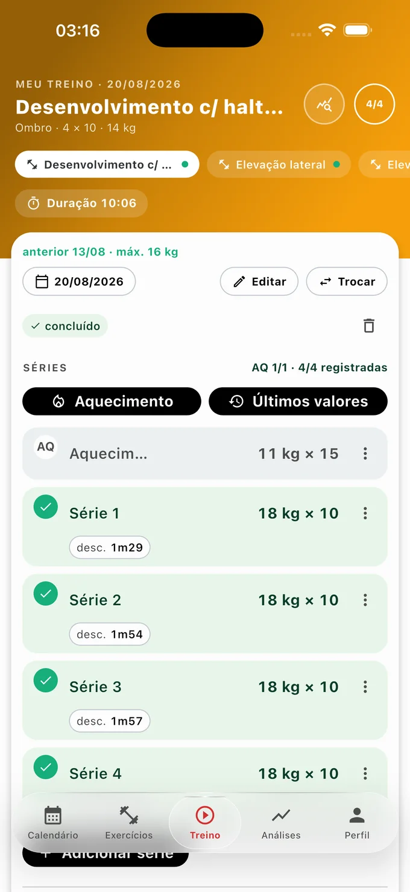
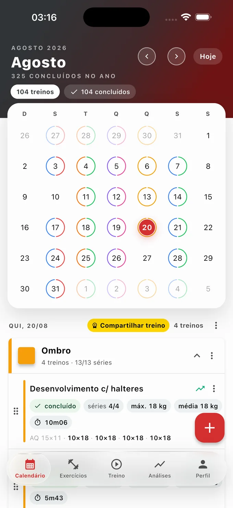
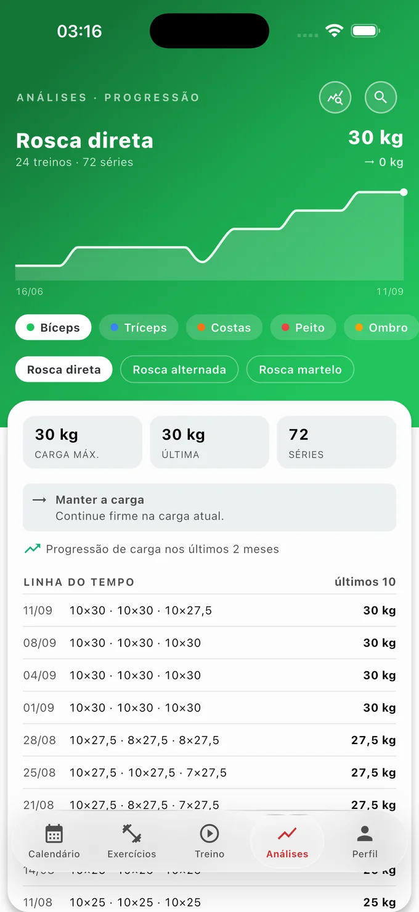
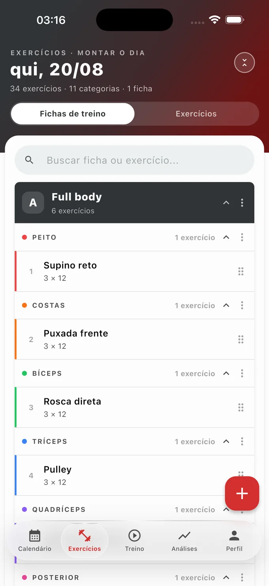
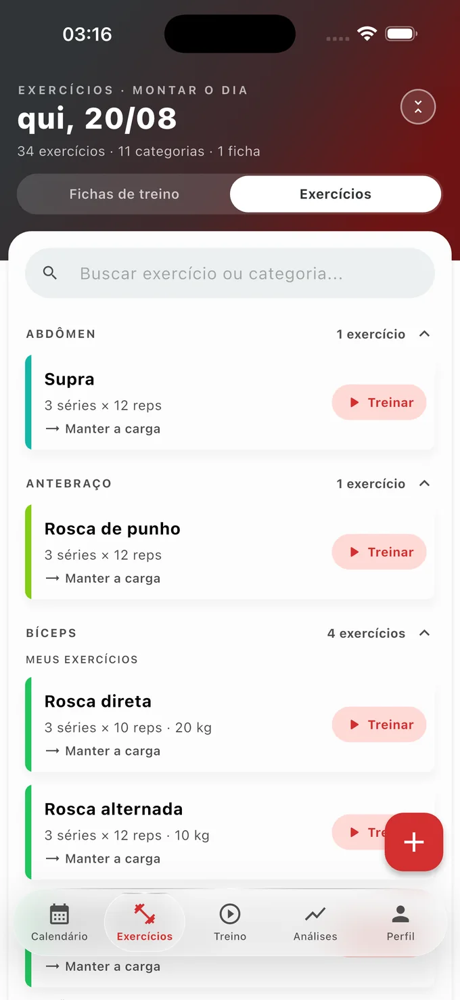
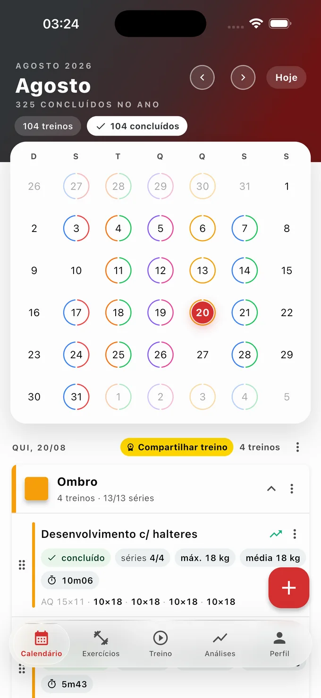
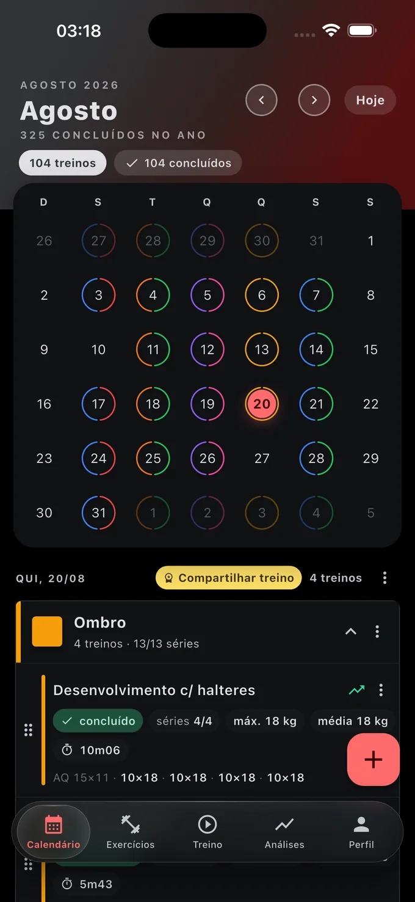
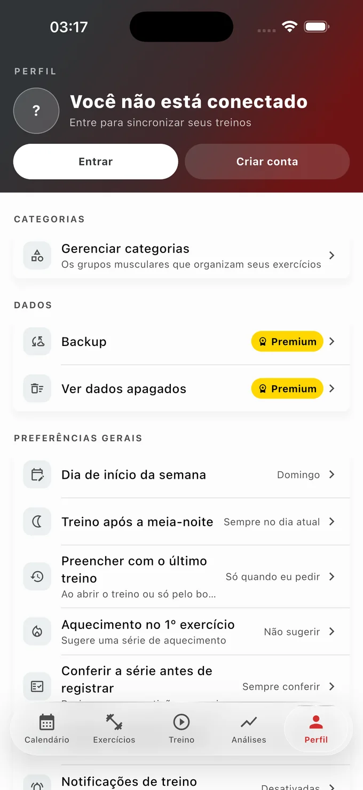

Sua evolução na academia,
registrada série a série
O Meu Progresso guarda o peso, as repetições e o descanso de cada série. Você chega no aparelho já sabendo quanto levantou da última vez — e o gráfico mostra a carga subindo semana a semana.



O que o app faz
Tudo o que você precisa para treinar sem depender de caderno, print ou planilha — e sem pagar nada por isso.
Calendário de treinos
Cada dia do mês mostra num anel colorido os músculos daquele dia — planejados ou já treinados. Um olhar e você sabe como foi a semana, e quantos treinos já fechou no ano.
Registro série a série
Peso e repetições de cada série, com o último treino à vista em cada uma — e preenchimento automático, se você quiser ligar. As séries de aquecimento ficam fora das suas métricas.
Três cronômetros
O treino inteiro, o descanso entre séries e o tempo de execução de cada uma. Começou uma série e saiu da tela? Ao voltar ao treino o cronômetro continua de onde estava.
Fichas de treino
Monte suas fichas A, B, C na ordem que quiser e lance o treino inteiro no dia com um toque. Cada ficha decide até o próprio aquecimento.
Seus exercícios, do seu jeito
Use o catálogo que já vem pronto ou cadastre os seus, com peso padrão, séries, repetições, peso por lado e marcação de exercício unilateral.
Progressão de carga
Um gráfico por exercício com a carga ao longo do tempo, a tendência e a recomendação para o próximo treino. A aba de análises é grátis e inteira.
Lembretes de treino
O app avisa antes do seu horário — e, se você quiser, lembra também do pré-treino e da hora de comer. Sem dia anotado, ele só pergunta se você vai treinar.
A ordem é sua
Arraste os exercícios do dia para a ordem em que você vai executá-los. Imprevisto? Adie o planejamento inteiro, copie um dia para outra data ou troque dois dias de lugar.
Modo claro e escuro
Interface pensada para ser lida com uma mão só, no meio da série, e que acompanha a fonte grande do sistema para quem precisa.
Telas do aplicativo
Tudo o que você vê aqui embaixo está na versão gratuita.





O que entrou nas últimas versões
O app não parou em pé desde o lançamento. Estas são as novidades mais recentes — e a maior parte é grátis.
A série em execução não se perde
Deu play numa série e foi olhar o calendário? O cronômetro continua. Nem fechar o app cancela a série — ela volta de onde parou.
O app abre onde você parou
Com um treino de hoje ou de ontem em andamento, abrir o app — pelo ícone ou pelo lembrete — leva direto nele, na série em que você parou. Quem assina ganha as mesmas portas na tela bloqueada e nos widgets.
Filtros e total do ano no calendário
Toque em "concluídos" e o mês mostra só esses. E abaixo do nome do mês o app conta quantos treinos você já fechou no ano.
Treino na tela bloqueada
Registre a série e ajuste a carga sem desbloquear o celular entre uma e outra.
Treino no Apple Watch e no Wear OS
O dia inteiro no pulso: play, pause, série e carga. O celular fica na mochila.
Compartilhe o treino do dia
Seus recordes e o rendimento do dia numa imagem pronta para postar.
Perguntas frequentes
O app é gratuito mesmo?
É. Registrar treinos, montar fichas, usar os cronômetros, ver o gráfico de evolução e receber os lembretes não custa nada, não tem anúncio e não tem limite de quantidade. A assinatura é opcional e libera as sete vantagens listadas acima.
Preciso de internet ou de criar uma conta?
Não. O app guarda tudo no próprio aparelho e funciona sem sinal nenhum. A conta é opcional e serve para guardar uma cópia dos seus treinos na nuvem: o envio acontece sozinho e de graça; a tela de backup e a restauração num aparelho novo são Premium.
O que exatamente muda com o Premium?
O treino aparece na tela bloqueada e no relógio, você ganha os widgets da tela inicial, a imagem do treino do dia para compartilhar, as análises avançadas com exportação em PDF, a restauração do backup na nuvem e a lixeira de treinos. Nenhuma função gratuita deixa de existir se você não assinar.
Como cancelo a assinatura?
Pela própria loja — Google Play ou App Store —, quando quiser. Como a verificação é feita pela loja, a mudança pode levar até sete dias para aparecer dentro do app.
Funciona no Apple Watch e no Wear OS?
Sim, com o Premium. O relógio mostra o dia inteiro e tem os mesmos controles: play, pause, registrar a série e ajustar a carga. Ele continua funcionando longe do celular e sincroniza quando os dois voltam a se falar.